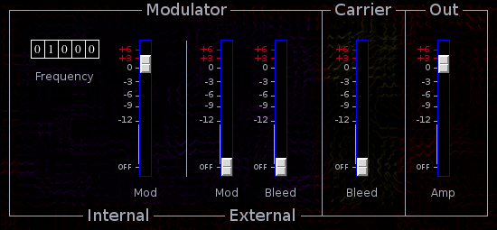

Ringmodulator
 Previous( Qmod )
Next( Rumklang Reverb )
Home
Contents
Synth Catalog
Previous( Qmod )
Next( Rumklang Reverb )
Home
Contents
Synth Catalog
Ring modulator effect. External carrier may be ring modulated either by internal oscillator or another external signal.
- Frequency tumbler - internal modulator frequency.
- Internal mod slider - amount of internal oscillator used as modulator.
- External mod slider - amount of external signal used as modulator.
- External Bleed slider - amount of external modulator which bleeds into output.
- Carrier Bleed slider - amount of carrier which bleeds into output. If carrier bleed is 100% the ring modulator is bypassed.
- Amp slider - output amplitude.
- carin - carrier input
- xmodin - external modulator input
- outbus - output
- imodfreq - internal modulator frequency (0 ... 20k)
- imodamp - internal modulator amp (0 ... 2)
- xmodamp - external modulator amp (0 ... 2)
- xmodbleed - amount of external modulator which bleeds into output (0 ... 1)
- carbleed - amount of carrier which bleeds into output (0 ... 1)
- amp - output gain (0 ... 2)
Previous( Qmod ) Next( Rumklang Reverb ) Home Contents Synth Catalog